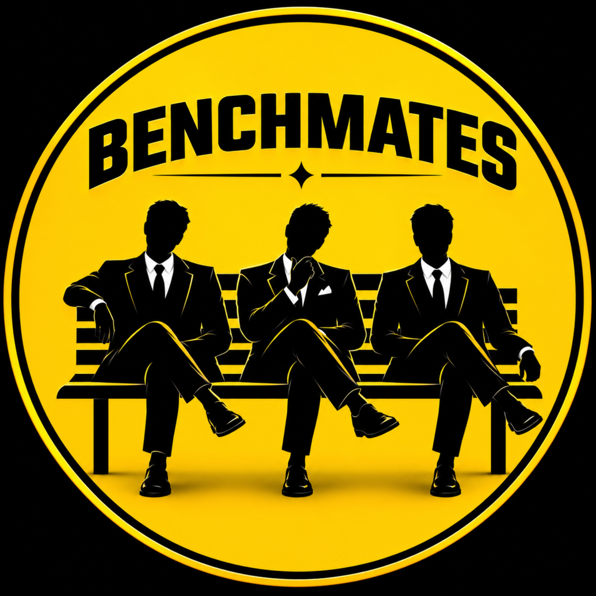

Story & development
Finding the central idea, shaping the script and defining what the audience should feel.
From the first “what if?”
BENCHMATES.BENCHMATES · FILM & DIRECTION HUB
From the first spark of an idea to the final frame, we shape stories through direction, visual language and thoughtful filmmaking.

SELECTED STORIES
A space for the films we make, the ideas we chase, and the worlds we bring to life. Replace these previews with your actual projects.
 ▶SHORT FILM · DRAMAThe Last LightA story about the things we leave unsaid.
▶SHORT FILM · DRAMAThe Last LightA story about the things we leave unsaid.
 ▶BRAND FILM · VISUAL STORYMade of MorePurpose-led storytelling for a modern brand.
▶BRAND FILM · VISUAL STORYMade of MorePurpose-led storytelling for a modern brand.
 ▶MUSIC VIDEO · PERFORMANCEAfter HoursRhythm, movement and atmosphere.
▶MUSIC VIDEO · PERFORMANCEAfter HoursRhythm, movement and atmosphere.
 ▶VISUAL EXPERIMENT · 02:14Between PlacesA quiet study of distance and belonging.
▶VISUAL EXPERIMENT · 02:14Between PlacesA quiet study of distance and belonging.
 ▶CAMPAIGN FILM · STORY-LEDFeel Every FrameBuilding a feeling, not just a message.
▶CAMPAIGN FILM · STORY-LEDFeel Every FrameBuilding a feeling, not just a message.
Portfolio preview imagery only. Swap in your own film stills, titles and watch links before publishing.
WHAT WE BRING TO SET
We help turn loose ideas into a focused creative direction, then carry that intention through every stage of production.
Finding the central idea, shaping the script and defining what the audience should feel.
From the first “what if?”Performance, pacing, blocking and visual choices that serve the story—not the other way around.
Purpose in every frameShot design, lighting, composition and movement to build a visual world with its own character.
A look you can recogniseFrom moodboards and shot lists to schedules and crew coordination, we prepare the details.
Creative, with a planEditorial rhythm, sound, colour and final delivery that bring the original vision together.
Every detail earns its placeWorking with artists, performers, brands and independent creators to make the idea stronger.
Better work, togetherFROM IDEA TO FINAL CUT
Clear collaboration keeps the creative vision strong and the production moving.
We hear the idea, understand the audience and agree on the heart of the story.
We build the concept, script, references and practical production plan.
We bring the crew together and turn the plan into meaningful images and performances.
We refine the cut, shape the sound and colour, then deliver the final film.
HAVE A STORY?
Tell us what you’re imagining—even if it’s only a rough idea. We’ll take it from there together.
Independent spirit.
Collaborative by nature.
Benchmates.